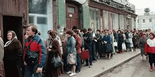
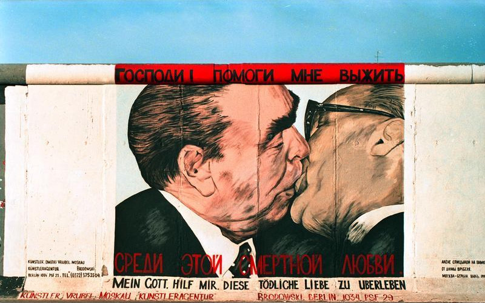
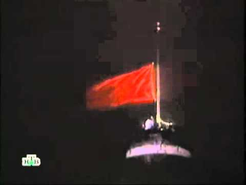
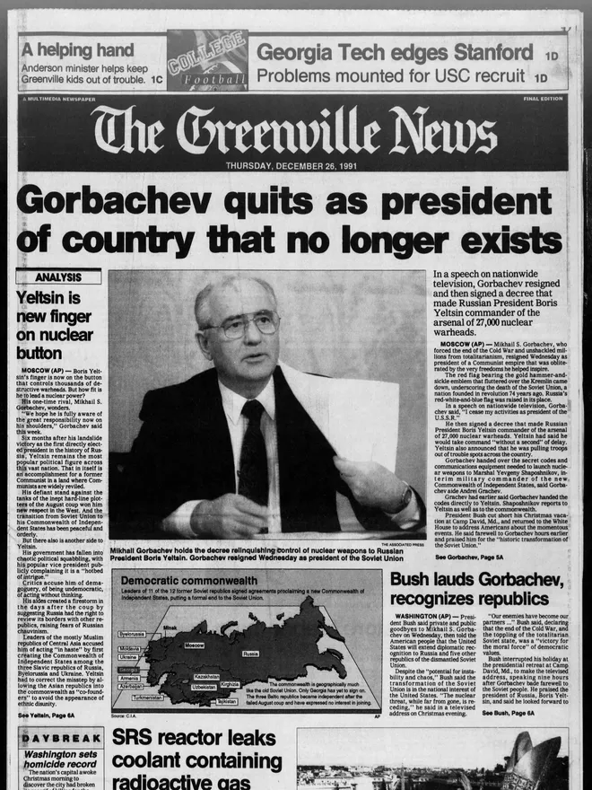

World History — Semester 2 — Lesson 08 — Standard 10.9
The Cold War Ends
Essential Question
Can a superpower collapse from the inside, and what happens to the world when it does?
THE END OF THE COLD WAR — 1985 TO 1991
1985
Mikhail Gorbachev becomes Soviet leader; introduces glasnost and perestroika.
1989
Eastern European revolutions sweep Poland, Hungary, East Germany; Berlin Wall falls November 9.
1990
Germany reunifies; Soviet republics begin declaring independence one by one.
Aug 1991
Hardline coup attempt against Gorbachev fails; accelerates the collapse.
Dec 1991
Gorbachev resigns; Soviet flag replaced by Russian flag over the Kremlin. USSR ceases to exist.
On the night of November 9, 1989, a confused East German government spokesman announced at a press conference that citizens could cross the Berlin Wall freely — effective immediately. He meant it would happen eventually, with paperwork and waiting periods. But people watching on live television heard something different. They heard: now. Within hours, crowds gathered at the Wall. Border guards who had no orders stood aside. And then people started climbing. They stood on top of the most hated symbol of the Cold War and waved at each other across a border that had divided families, killed escapees, and split a city for 28 years. By midnight, people were swinging sledgehammers.
On November 9, 1989, a confused East German official announced on live TV that citizens could cross the Berlin Wall — immediately. He meant it would happen eventually. But people heard: now. Crowds rushed to the Wall. Guards stood aside. People climbed on top and waved at each other across a border that had divided families and killed people trying to cross for 28 years. By midnight, they were smashing it with sledgehammers.
What looked sudden had been building for years. The Soviet Union — the superpower that had faced the United States across every major crisis of the Cold War — was collapsing from the inside. Not from a military defeat. Not from a nuclear war. From its own contradictions.
What looked sudden had been building for years. The Soviet Union was not defeated in a war. It collapsed from the inside — from problems it could no longer hide or fix.
CHAPTER ONE
THE SYSTEM CRACKS

Soviet citizens in a food line, 1980s. The Soviet economic system could not produce enough basic goods to meet the needs of its own population. Wikimedia Commons.
By the early 1980s, the Soviet Union had serious structural problems it was hiding from the world and from itself. The command economyAn economic system where the government controls all production, prices, and distribution rather than the market. — in which the government decided what was produced, at what price, and in what quantities — had worked well enough to industrialize a poor country in the 1930s and win World War II in the 1940s. But by the 1980s it was failing. Factories produced quotas, not quality. Stores were stocked with goods nobody wanted and empty of goods everybody needed. The Soviet Union was secretly importing grain from the United States just to feed its own people.
By the early 1980s, the Soviet Union had serious hidden problems. Its command economy — where the government controlled all production — had worked in earlier decades. But by the 1980s it was failing. Factories made whatever met their quota, not what people actually needed. Stores had empty shelves. The Soviet Union was secretly buying grain from the United States to feed its own citizens.
The military budget was consuming roughly 25 percent of the Soviet GDP — an enormous share compared to the United States spending around 6 percent. The arms race was bankrupting the country. Soviet technology was falling behind. American consumers had personal computers, VCRs, and consumer goods the Soviet system simply could not match. Soviet citizens who picked up foreign radio broadcasts knew it. The leadership knew it too — but admitting failure was politically dangerous in a system built on the claim that communism was winning.
The Soviet military was spending about 25 percent of everything the country produced — just to keep up with the United States in the arms race. American consumers had personal computers and other modern goods the Soviet system could not produce. Soviet citizens who listened to foreign radio knew their country was falling behind. The leadership knew too — but admitting failure was dangerous in a system built on claiming that communism was winning.
The Soviet Union also controlled Eastern Europe through threat and force. It had crushed reform movements in Hungary in 1956 and Czechoslovakia in 1968 by sending in tanks. But these occupations cost money, generated international outrage, and required keeping millions of soldiers stationed abroad. The empire was becoming too expensive to maintain, and the people living inside it were running out of patience.
The Soviet Union also controlled Eastern Europe by force. It had sent tanks to crush reform movements in Hungary in 1956 and Czechoslovakia in 1968. But keeping troops in Eastern Europe cost money the USSR did not have, and the people living under Soviet control were losing patience. The empire was too expensive to hold together.
Real-world connection: The Soviet experience is a case study in how powerful systems can collapse not from external attack but from internal contradictions they refuse to honestly address.
Real-world connection: The Soviet collapse shows how powerful systems can fall apart from the inside when they stop being honest about their own problems.
DID YOU KNOW
In 1986, a Soviet nuclear reactor at Chernobyl exploded in what became the worst nuclear accident in history. Gorbachev later said the Chernobyl disaster was the single event that most convinced him the Soviet system had to change — not because of the explosion itself, but because the government's instinct was to lie about it for weeks while radiation spread across Europe. A system that hid a nuclear meltdown from its own people, he realized, could not survive the modern world.
CHAPTER TWO
GORBACHEV'S GAMBLE
Mikhail Gorbachev, General Secretary of the Soviet Communist Party from 1985. He tried to save the Soviet system through reform. Instead, he ended it. Wikimedia Commons.
When Mikhail GorbachevSoviet leader from 1985 to 1991 who introduced reforms that ultimately led to the collapse of the USSR. came to power in 1985, he was not trying to end the Soviet Union. He was trying to save it. He believed that the system needed to be opened up and modernized — not replaced. He introduced two major reforms. GlasnostRussian for "openness" — Gorbachev's policy of allowing more freedom of speech and press in the Soviet Union., meaning openness, allowed Soviet citizens and journalists to criticize the government, discuss failures, and access information that had previously been forbidden. PerestroikaRussian for "restructuring" — Gorbachev's attempt to reform the Soviet economy by introducing limited market elements., meaning restructuring, attempted to reform the economy by introducing limited market elements and reducing government micromanagement of production.
When Mikhail Gorbachev became Soviet leader in 1985, he was not trying to destroy the USSR. He wanted to save it through reform. He introduced two major changes. Glasnost — meaning "openness" — allowed Soviet citizens to criticize the government and access information that had been forbidden. Perestroika — meaning "restructuring" — tried to modernize the economy by introducing some market elements and giving factories more independence.
Both reforms backfired in ways Gorbachev had not anticipated. Glasnost opened a door that could not be closed. Once Soviet citizens could speak freely, decades of pent-up frustration came pouring out. Newspapers published stories about Stalin's mass murders, the true costs of the Afghan war, the failures of the economy. People who had been afraid to speak discovered there were millions of others who felt exactly the same way. Perestroika was worse: it loosened central controls without creating functioning market alternatives, producing chaos rather than efficiency. Both reforms simultaneously weakened the government's grip and amplified the anger of the people it governed.
Both reforms backfired badly. Glasnost opened a door that could not be closed. Once people could speak freely, decades of frustration poured out. Newspapers exposed Stalin's mass murders, the failures of the economy, the true costs of the Afghan war. Perestroika was even worse — it loosened government control of the economy without building anything to replace it, creating chaos instead of improvement. Together, the two reforms weakened the government's control while making people angrier than ever.
Gorbachev also made a decision with enormous consequences: he would not send tanks into Eastern Europe to crush reform movements the way his predecessors had. When Poland held free elections in 1989 and the communist party lost, the Soviet Union did not invade. When Hungary opened its border with Austria, allowing East Germans to escape to the West through a gap in the Iron Curtain, the Soviet Union did not invade. The message reached every Eastern European country simultaneously: Moscow would not save their communist governments this time. The revolutions that followed moved with astonishing speed.
Gorbachev also made a huge decision: he would not use tanks to crush reform movements in Eastern Europe the way previous Soviet leaders had. When Poland held free elections and the communists lost, the Soviets did nothing. When Hungary opened its border with Austria — letting East Germans escape to the West — the Soviets did nothing. Every Eastern European country got the same message: Moscow would not save their communist governments this time. What happened next moved incredibly fast.
FAST FACTS
THE SOVIET COLLAPSE BY THE NUMBERS
25%of Soviet GDP spent on the military by the 1980s — compared to roughly 6% for the United States
15new independent countries that appeared on the world map when the Soviet Union dissolved in 1991
28years the Berlin Wall divided the city of Berlin — built in 1961, torn down in 1989
69years the Soviet Union existed — from its founding in 1922 to its dissolution on December 25, 1991
CHAPTER THREE
1989
Citizens dismantle the Berlin Wall, November 1989. The wall that had killed over 140 people trying to cross it came down in a single night — without a single shot fired. Wikimedia Commons.
1989 was the year communism fell in Eastern Europe. In Poland, the SolidarityA Polish trade union and political movement that challenged communist rule — the first legal independent labor union in a Soviet-bloc country. movement — an independent labor union that had been fighting the government for nearly a decade — won the first free elections. In Czechoslovakia, a "Velvet Revolution" peacefully transferred power in a matter of weeks. In Romania, the communist dictator Nicolae Ceaușescu was captured and executed by his own army on Christmas Day. Each revolution fed the next: people watching on television saw that it was possible, and the next country moved.
1989 was the year communist governments fell across Eastern Europe. In Poland, the Solidarity movement won the first free elections. In Czechoslovakia, a peaceful revolution transferred power in weeks. In Romania, the communist dictator was captured and executed by his own army. Each revolution inspired the next — people watching on TV saw that it was possible and acted.
The fall of the Berlin WallA wall built in 1961 dividing communist East Berlin from democratic West Berlin; its fall on November 9, 1989 became the defining symbol of the Cold War's end. on November 9 became the single most iconic moment of the Cold War's end. Over 140 people had been killed trying to cross it since it was built in 1961. The East German government had used it as a symbol of protection — claiming it kept Western influence out — when everyone knew it was really there to keep East Germans in. When it came down, without a single shot fired, the image went around the world in hours. The Cold War, which had been built on the idea that nuclear-armed superpowers would hold their positions forever, was suddenly, visibly, over.
The Berlin Wall fell on November 9, 1989. Over 140 people had been killed trying to cross it since it was built in 1961. The East German government called it protection from Western influence — but everyone knew it was really there to keep East Germans in. When it came down without a single shot fired, the image spread around the world in hours. The Cold War — which seemed like it would last forever — was suddenly, visibly, over.
Germany reunified in October 1990. NATO expanded eastward. And the Soviet Union's own republics — watching what had just happened in Eastern Europe — began demanding independence of their own. The nationalismA strong belief in the independence and identity of one's own nation, often as a force against outside control. that the Soviet system had suppressed for decades was suddenly alive everywhere at once.
Germany reunified in 1990. And the Soviet Union's own internal republics — watching what had just happened in Eastern Europe — started demanding independence too. Nationalism that the Soviet system had suppressed for decades suddenly came alive everywhere at once.
ART SPOTLIGHT

"My God, Help Me to Survive This Deadly Love" — Dmitri Vrubel, East Side Gallery, Berlin, 1990
After the Berlin Wall fell, artists were invited to paint murals on the remaining sections. Russian artist Vrubel painted this image — based on a famous photograph — of Soviet leader Leonid Brezhnev and East German leader Erich Honecker in a "socialist fraternal kiss," a standard greeting between communist leaders.
The original mural deteriorated over the years and Vrubel was asked to repaint it in 2009 for the Wall's 20th anniversary. When he did, he secretly changed the German text beneath it — the original read "My God, Help Me to Survive This Deadly Love"; the restoration added "Such is Life" below it. The Wall that had once been the most closely guarded border in the world had become a canvas for the people who had once been imprisoned by it.
CHAPTER FOUR
THE USSR DISSOLVES

The Soviet flag is lowered over the Kremlin for the last time, December 25, 1991 — the formal end of the USSR after 69 years. Wikimedia Commons.
Through 1990 and 1991, the Soviet republics declared independence one by one: the Baltic states of Estonia, Latvia, and Lithuania went first; then Ukraine, Georgia, Armenia, and the Central Asian republics followed. Each declaration weakened the central government further. In August 1991, hardline Communist Party members attempted a coup against Gorbachev, placing him under house arrest. The coup failed within three days when ordinary citizens surrounded tanks in Moscow and soldiers refused to fire. But the failure of the coup accelerated the dissolutionThe formal breaking apart of a country or organization — in this case, the Soviet Union splitting into 15 independent nations. of the union. The Communist Party was suspended. The republics accelerated their independence declarations.
Through 1990 and 1991, Soviet republics declared independence one by one. The Baltic states went first, then Ukraine, Georgia, and the Central Asian republics. In August 1991, communist hardliners tried to overthrow Gorbachev and stop the collapse. The coup failed in three days when citizens surrounded tanks in Moscow and soldiers refused to shoot. But the failure actually sped up the dissolution — the Communist Party was suspended and the remaining republics moved faster toward independence.
On December 25, 1991, Mikhail Gorbachev resigned as president of a country that no longer existed. The Soviet flag over the Kremlin was lowered and replaced by the Russian flag. The Soviet UnionThe Union of Soviet Socialist Republics — a communist superpower that existed from 1922 to 1991, encompassing Russia and 14 other republics. had ceased to exist. Fifteen new countries appeared on the world map. The United States became the world's only superpower — what analysts called a unipolarA world order with a single dominant superpower, rather than two competing ones. moment. The Cold War that had organized global politics for 45 years was over.
On December 25, 1991, Gorbachev resigned as president of a country that no longer existed. The Soviet flag over the Kremlin was lowered and the Russian flag went up. The Soviet Union was gone. Fifteen new countries appeared on the world map. The United States became the world's only superpower. The Cold War that had shaped world politics for 45 years was over.
The aftermath was not a simple triumph. Russia under Boris Yeltsin stumbled through a chaotic decade of economic collapse, corruption, and organized crime as the command economy was dismantled with no replacement ready. Nuclear weapons from the former Soviet arsenal were suddenly in multiple new countries with uncertain security. Ethnic wars exploded in Yugoslavia as the Cold War framework that had suppressed those tensions disappeared. American foreign policy, confident that history had validated its model, made a series of costly overreach decisions in the 1990s and 2000s. The end of the Cold War created a new world — but not necessarily a safer or simpler one.
The aftermath was not simple. Russia collapsed economically in the 1990s as the command economy was dismantled with nothing to replace it. Nuclear weapons were now in multiple new countries with uncertain security. Ethnic wars broke out in Yugoslavia once the Cold War order that had suppressed them disappeared. The United States, convinced it had won history, made costly foreign policy mistakes in the years that followed. The end of the Cold War created a new world — but not a simpler or safer one.
Real-world connection: Russia's relationship with its former Soviet neighbors — Ukraine, Georgia, the Baltic states — is directly shaped by the unfinished business of the 1991 dissolution and what came after.
Real-world connection: Russia's conflicts with Ukraine and other former Soviet countries today are directly connected to how the Soviet Union fell apart in 1991 and what was left unresolved.
PRIMARY SOURCE MOMENT

Gorbachev delivers his resignation address, December 25, 1991. Wikimedia Commons.
"I hereby discontinue my activities at the post of President of the Union of Soviet Socialist Republics... We're now living in a new world. An end has been put to the Cold War and to the arms race... The world was transformed with extraordinary speed... All these changes demanded immense strain. They were carried out under conditions of an intense struggle against the background of increasing resistance from the old, obsolete structures."
— Mikhail Gorbachev, Resignation Address, Soviet Television, December 25, 1991
WHY THIS MATTERS: Gorbachev is speaking at the moment a superpower ceases to exist — live on television. Notice what he claims: that the changes were necessary and that the Cold War's end was an achievement, not a defeat. As you read this, consider: is he right that the world was transformed for the better? And given what followed — the chaos in Russia, the wars in Yugoslavia, the nuclear security problems — how do you evaluate his claim that "we're now living in a new world"?
THEN AND NOW
THE COLD WAR ENDED — BUT THE WORLD IT LEFT BEHIND IS STILL BEING SORTED OUT.
1989
The Berlin Wall falls, November 1989. Wikimedia Commons.
NOW
The East Side Gallery in Berlin today — the remaining section of the Berlin Wall, now an open-air art museum visited by millions. Wikimedia Commons / CC.
THEN
In 1989, the Berlin Wall was the most recognizable symbol of the Cold War — a concrete barrier that divided not just a city but an entire world system. When it came down, it felt to many like the end of history itself: democracy had won, the argument was over, and a peaceful new world order was beginning.
NOW
Today the remaining section of the Wall is the East Side Gallery — one of the world's largest open-air art museums, covered in murals painted by artists from around the world. Millions of tourists visit every year. But the questions the Cold War raised — about power, about sovereignty, about what happens when empires dissolve — are still being answered, sometimes violently, in the countries the Soviet Union left behind.
CONNECTION
The Cold War ended in 1991, but its consequences have not. Russia's 2022 invasion of Ukraine, the tensions with NATO, and the authoritarian turn in several former Soviet states are all direct outgrowths of how the Soviet Union collapsed and what was — and was not — resolved. The Wall became a museum. The questions it represented did not.
Gorbachev said he was trying to save the Soviet system, not destroy it — but his reforms ended it anyway. Can you think of another example in history where a leader's attempt to fix a system instead caused it to collapse?